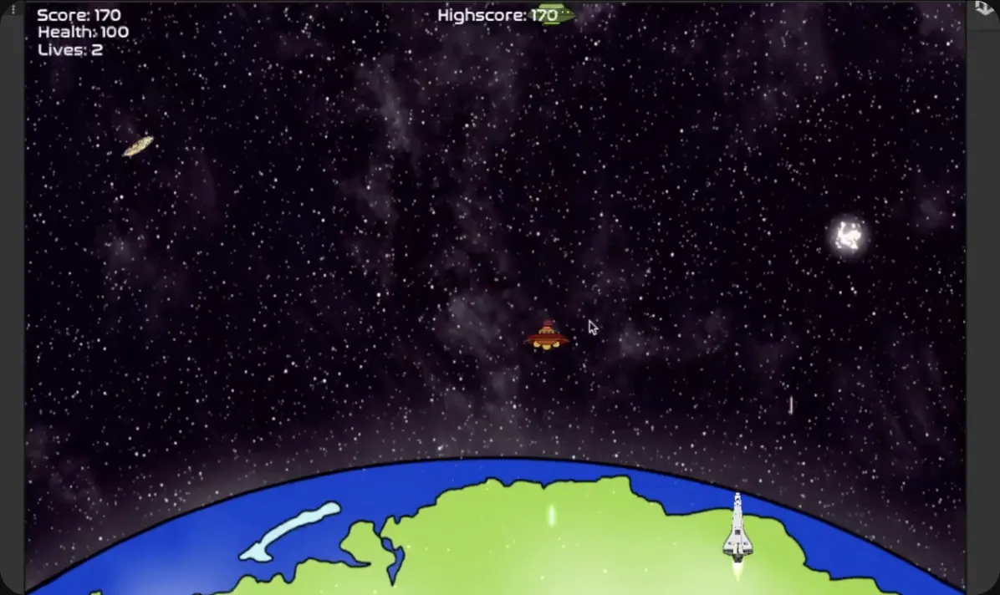
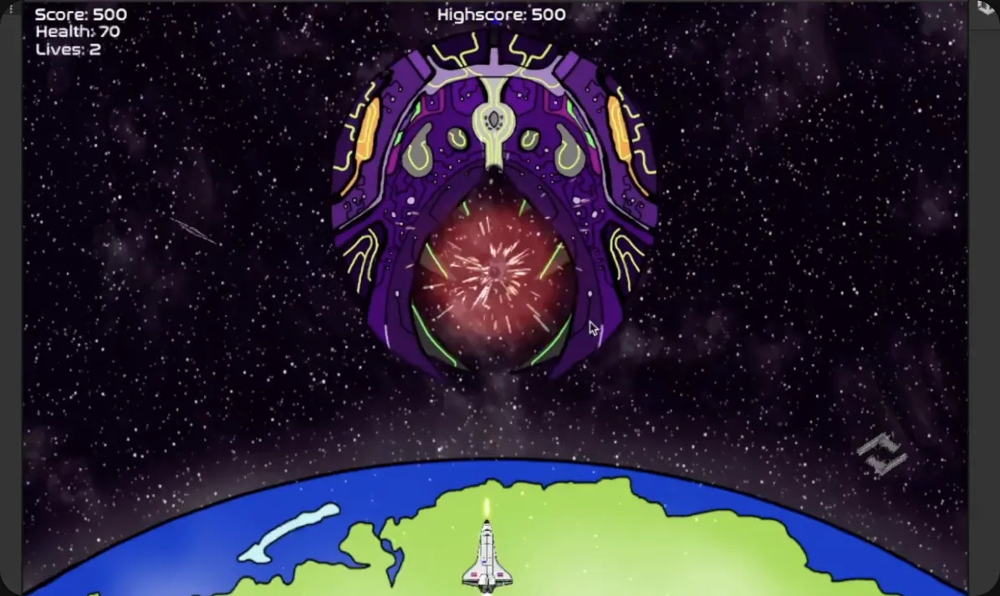

Cosmic Assault
Gameplay Programmer
- Software:
- Unity 2022 LTS - Photoshop - GitHub
- Languages:
- C#
- Team Size:
- 1
Originally a timed-session shooter, I spearheaded a complete mechanical and visual pivot into an Endless Survival Mode. This overhaul focused on sustainable difficulty scaling, score-driven boss encounters, and a refreshed visual identity to support long-term player engagement.
Technical Contributions
Dynamic Difficulty Scaling: Architected a survival framework where enemy attributes (speed, health, and spawn rate) scale non-linearly over time. Implemented three distinct difficulty tiers, each utilizing unique coefficients to ensure a balanced challenge for both casual and hardcore players.
Score-Driven Boss Architecture: Developed a "Milestone Spawn" system that triggers high-intensity boss encounters at specific score intervals. This creates a rhythmic flow to the gameplay, preventing fatigue during extended sessions.
Combat & Power-Up Ecosystem: Designed and implemented three unique enemy archetypes and a primary boss. To counter the scaling difficulty, I engineered a limited-time power-up system with varied attack mechanics, providing players with strategic "windows of power."
Visual Identity Redesign: Executed a comprehensive art pass to establish a cohesive, modern aesthetic. This involved updating sprite/model assets and UI elements to ensure visual clarity, even as the screen becomes increasingly crowded during late-game waves.
Technical Challenges & Solutions
Challenge: Breaking the Linear Ceiling
Transitioning to an infinite loop required identifying and stripping away hard-coded constraints. I had to decouple the core game-state logic from a static countdown timer and replace it with a dynamic, score-driven architecture capable of sustaining long-term engagement.
Solution
I engineered a performance-driven threshold system to serve as the game's new heartbeat, directly tying enemy spawns and boss encounters to player progression rather than time.
- Dynamic Pacing: Balanced the introduction of three distinct enemy archetypes and a primary boss, ensuring mechanical complexity scaled in tandem with the player's score.
- Performance-First Optimization: Overhauled the spawn logic to efficiently manage the massive actor counts inherent to endless modes, maintaining a stable framerate and consistent game feel during late-stage waves.

Challenge: Replayability
The original timed mode lacked long-term stakes, making it difficult to encourage players to return for consecutive sessions.
Solution
I pivoted the core loop to focus on classic arcade replayability. By implementing a persistent score-tracking system, I provided players with clear, comparative milestones, driving intrinsic motivation to continuously top their personal best.

Reflections Iterative Systems Design
This project shifted my focus toward modular balance. It taught me that a game's "rhythm" is a delicate ecosystem of player power versus enemy scaling. By respecting the original foundation while introducing new, scalable variables, I learned how to transform a static experience into a "living" system that rewards mastery and encourages replayability.
Decoupling Systems
Transitioned a rigid time-based framework into a dynamic, score-driven engine capable of scaling infinitely based on player progression and performance.
Balancing Difficulty
Architected non-linear difficulty curves paired with strategic power-up windows to maintain a challenging yet rewarding flow state during extended sessions.
Optimizing Endless Scaling
Refactored core spawn logic to efficiently manage massive late-game actor counts, ensuring a stable framerate and consistent game feel under heavy loads.